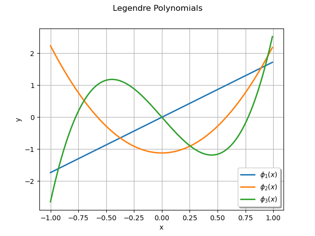
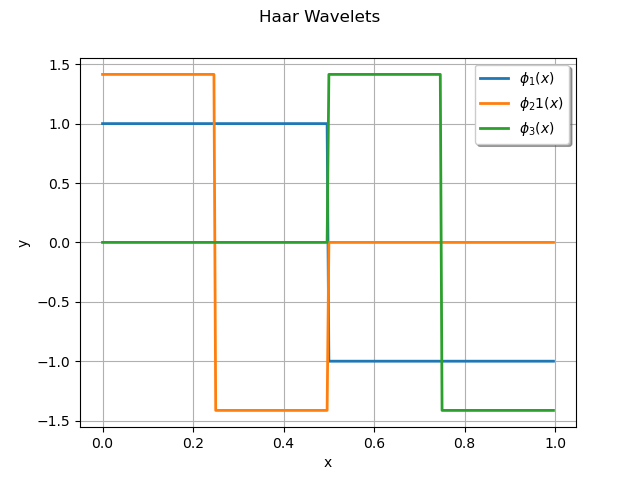
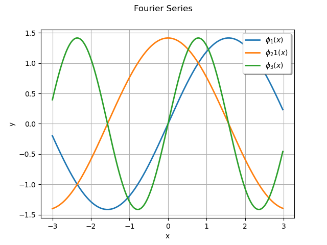

Note
Go to the end to download the full example code
Create univariate functions¶
This example presents different ways to create univariate functions which can be used to create
a functional basis. This is the type of functions involved, for example, in the
FunctionalChaosAlgorithm class.
The univariate functions considered in this example can be, in some cases, orthogonal to a distribution, but this is not a necessary condition to create univariate functions. For example, Legendre polynomials are orthogonal with respect to the uniform distribution, but the monomials of the canonical polynomial basis are not necessarily orthogonal.
Description¶
We want to build univariate functions  .
.
We can do that:
Case 1: using orthogonal polynomials,
Case 2: using univariate polynomials,
Case 3: using orthogonal functions.
Case 1: Orthogonal polynomials¶
In that case, the polynomials are orthogonal with respect to a measure.
For example: we consider the Legendre polynomials family, orthogonal with respect to the uniform
distribution on ![[0,1]]() . We use the
. We use the LegendreFactory class.
Its method build() applied to  returns the polynomial number
of the family.
returns the polynomial number
of the family.
import openturns as ot
import openturns.viewer as otv
f1 = ot.LegendreFactory().build(1)
f2 = ot.LegendreFactory().build(2)
f3 = ot.LegendreFactory().build(3)
print(type(f1))
g = f1.draw(-1.0, 1.0, 256)
g.add(f2.draw(-1.0, 1.0, 256))
g.add(f3.draw(-1.0, 1.0, 256))
g.setLegends([r'$\phi_1(x)$', r'$\phi_2(x)$', r'$\phi_3(x)$'])
g.setLegendPosition('bottomright')
g.setColors(ot.Drawable.BuildDefaultPalette(3))
g.setTitle('Legendre Polynomials')
view = otv.View(g)

<class 'openturns.orthogonalbasis.OrthogonalUniVariatePolynomial'>
We get the measure associated to the polynomial family:
measure_Legendre = ot.LegendreFactory().getMeasure()
print('Measure orthogonal to Legendre polynomials = ', measure_Legendre)
Measure orthogonal to Legendre polynomials = Uniform(a = -1, b = 1)
Case 2: Univariate polynomials¶
Univariate polynomials are not necessarily orthogonal with respect to a measure.
We can use:
the
UniVariatePolynomialclass,the
MonomialFunctionFactoryclass,the
MonomialFunctionclass.
For example, we consider :
![\begin{array}{lcl}
f(x) & = & 1+2x+3x^2+4x^3\\
g(x) & = & x^3
\end{array}]()
f = ot.UniVariatePolynomial([1.0, 2.0, 3.0, 4.0])
g1 = ot.MonomialFunctionFactory().build(3)
g2 = ot.MonomialFunction(3)
print('f = ', f)
print('g1 = ', g1)
print('g2 = ', g2)
f = 1 + 2 * X + 3 * X^2 + 4 * X^3
g1 = [x] --> x^3
g2 = [x] --> x^3
There is no associated measure: if it is uncommented, the following command will fail, as expected.
# print(ot.MonomialFunctionFactory().getMeasure())
Case 3: Orthogonal functions¶
In that case, the functions are orthogonal with respect to a measure  .
.
We can use:
the
HaarWaveletFactoryclass,the
FourierSeriesFactoryclass.
The method build() returns the function number of the family.
For example, we consider a Haar Wawelet.
f1 = ot.HaarWaveletFactory().build(1)
f2 = ot.HaarWaveletFactory().build(2)
f3 = ot.HaarWaveletFactory().build(3)
g = f1.draw(0.0, 1.0, 256)
g.add(f2.draw(0.0, 1.0, 256))
g.add(f3.draw(0.0, 1.0, 256))
g.setLegends([r'$\phi_1(x)$', r'$\phi_21(x)$', r'$\phi_3(x)$'])
g.setLegendPosition('topright')
g.setColors(ot.Drawable.BuildDefaultPalette(3))
g.setTitle('Haar Wavelets')
view = otv.View(g)

We get the measure: for the Haar Wavelet family, the  distribution.
distribution.
measure_Haar = ot.HaarWaveletFactory().getMeasure()
print('Measure orthogonal to Haar wavelets = ', measure_Haar)
Measure orthogonal to Haar wavelets = Uniform(a = 0, b = 1)
For example, we consider a Fourier Series.
f1 = ot.FourierSeriesFactory().build(1)
f2 = ot.FourierSeriesFactory().build(2)
f3 = ot.FourierSeriesFactory().build(3)
g = f1.draw(-3.0, 3.0, 256)
g.add(f2.draw(-3.0, 3.0, 256))
g.add(f3.draw(-3.0, 3.0, 256))
g.setLegends([r'$\phi_1(x)$', r'$\phi_21(x)$', r'$\phi_3(x)$'])
g.setLegendPosition('topright')
g.setColors(ot.Drawable.BuildDefaultPalette(3))
g.setTitle('Fourier Series')
view = otv.View(g)

We get the measure: for the Fourier Series, the  distribution.
distribution.
measure_Fourier = ot.FourierSeriesFactory().getMeasure()
print('Measure orthogonal to Fourier series = ', measure_Fourier)
Measure orthogonal to Fourier series = Uniform(a = -3.14159, b = 3.14159)
otv.View.ShowAll()